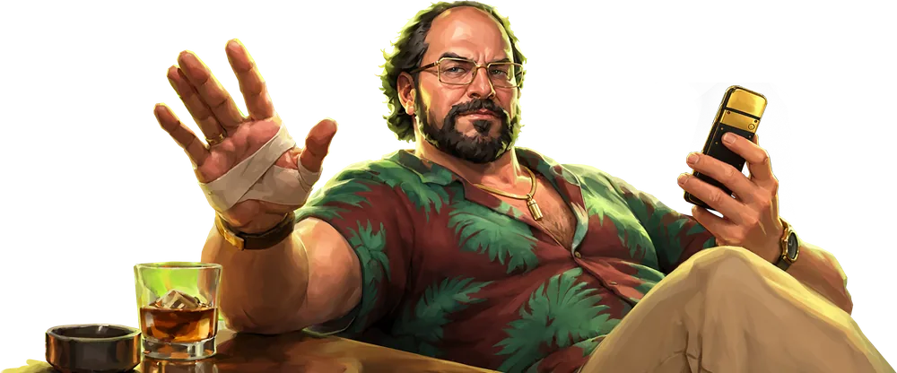

ROB RUN Anfänger-Guide: Wo du anfängst
Fang mit dem Tutorial an: Du brichst aus dem Gefängnis aus, kommst in Lennys Motel an und fährst von dort nach Looty Bay. Ohne Maske bist du Zivilist, und sterben kostet dich nichts. Mit Maske bist du Verbrecher: Du musst die Beute lebend aus der Stadt bringen, und wenn du stirbst, verlierst du dein ganzes Inventar. Bewahr dein Geld auf einem Bankkonto auf und rechne einmal pro Woche mit der Razzia der Bundesbehörden.
Aktualisiert am . Das Spiel ist im Early Access und ändert sich jede Woche.
Das Tutorial Schritt für Schritt
- Gefängnis. Spuck in den Fraß, sprich mit dem Tätowierer und entkomme durch den Ausgang.
- Lennys Motel. Sprich mit Lenny, schalte eine Pistole mit Munition frei, miete ein Fahrzeug und verlass das Motelgelände.
- Looty Bay. Such dir einen abgelegenen Ort und setz die Maske auf. Besorg dir einen wertvollen Gegenstand, verkauf ihn an den Hehler und nimm das Bargeld, dann stiehl etwas Wertvolles und verlass damit die Stadt.
Das Tutorial führt dich auch durch dein eigenes Grundstück: Land mieten, ein Haus platzieren, Beute über den Laptop in deiner Basis verkaufen, Bargeld am Geldwäsche-Tisch waschen und ein Auto im Schlüsselschrank abstellen. Am Ende sagt das Spiel „Du bist frei!“: Es gibt nur ein Ziel, unter Gleichen aus dem Nichts aufzusteigen.

Zivilist, Verbrecher oder Polizist
- Zivilist: keine Maske. Du behältst deinen Besitz, wenn du stirbst, Heilen ist kostenlos, und du kannst die Stadt gefahrlos erkunden und eine Rolle wählen.
- Verbrecher: Maske auf. Du kannst rauben, behältst die Beute aber nur, wenn du lebend aus der Stadt kommst. Wenn du stirbst, verlierst du dein ganzes Inventar.
- Polizist: Dienst im Polizeirevier in Palmside: wie du Polizist wirst.
- In Looty Bay hat die ganze Gruppe dieselbe Rolle.
- Lennys Motel ist eine sichere Zone: Waffen sind dort tabu.
Dein erstes Geld
- Ladenangestellte versuchen, die Polizei zu rufen, wenn sie einen Verbrecher sehen. Ziel auf sie, dann überlegen sie es sich anders.
- Zerstör Überwachungskameras, bevor sie den Alarm auslösen. Bei einigen Gebäuden kannst du die Stromkästen knacken, um Kameras und Alarmanlage auszuschalten.
- Ein Dietrich öffnet Türen, ohne den Alarm auszulösen, zerbrochenes Glas dagegen kann ihn auslösen.
- Gegenstände verkaufst du an den Hehler, Fracht am Schmuggler-Van: wo sie auf der Karte sind.
- Hinter verschlossenen Türen und in Safes liegt oft wertvolle Beute, und die Schlüssel tauchen überall in der Stadt auf: was jeder Schlüssel öffnet.
- Der Solo-Modus (Schwer) startet dich auf Berüchtigtheitsstufe 4 mit einer Chance auf zusätzliche seltene Beute, der Duo-Modus auf Stufe 2 mit mehr Geld für Fracht und Gegenstände.

 Hehler4 auf der Karte. Kauft Gegenstände gegen Bargeld.
Hehler4 auf der Karte. Kauft Gegenstände gegen Bargeld. Schmuggler-Van2 auf der Karte. Kauft Fracht.
Schmuggler-Van2 auf der Karte. Kauft Fracht.
Wie du nicht alles verlierst
- Wenn es keinen Ausweg gibt, ergib dich der Polizei: Du verlierst nur, was in deiner Tasche ist, und behältst deine Ausrüstung.
- Wer ausgeknockt ist, kann wiederbelebt werden, bevor der Timer abläuft.
- Versteck dich in Büschen, Schränken und Müllcontainern: Dort sieht niemand dich oder deinen Nicknamen.
- Wer Zivilisten tötet, steigt in der Stufe „Gesucht“. Auf Stufe 3 bist du „Meistgesucht“, und die ganze Stadt sieht dich auf der Karte.
- In Siedlungen gibt es keine Polizei: Sie sind gesetzlose Zonen, und wenn du dort stirbst, verlierst du Ausrüstung und Tasche.
Dein Zuhause und die Bank
- Ein Grundstück mietest du mit einer Grundstücksurkunde, deren Stufe zur Stufe des Bezirks passt. Die Urkunde setzt du auf einer freien Parzelle in einer Siedlung ein, die einem Spieler gehört.
- Jedes Gebäude hat sein eigenes Sicherheitssystem, und Sicherungen machen es stärker: wie viele Dekoder ein Einbruch braucht.
- Schließ die Haustür, wenn du gehst.
- Zum Geldwaschen brauchst du ein Bankkonto: wie du ein Konto eröffnest und Geld wäschst.
- Die Welt läuft weiter, während du offline bist: Bargeld wird gewaschen und Fracht geöffnet.
Die Razzia und die Haftzeit
- Jeder Bundesstaat lebt 7 Tage, dann kommt die Razzia der Bundesbehörden: Wipe-Timer.
- Alles, was im Bundesstaat beschlagnahmt wird, wird zu Jahren Haftzeit: Haftzeit-Rechner und so funktioniert die Haftzeit.
- Haftzeit schaltet weitere Lieferungen von Lenny und Tattoos des Tätowierers frei.
Wie es weitergeht
Am Ende des Tutorials zählt das Spiel auf, was du tun kannst:
- Polizist werden (Guide);
- allen alles stehlen;
- Müllcontainer durchwühlen;
- Fracht transportieren (was tun mit Fracht);
- die Häuser anderer Spieler ausrauben (Dekoder-Rechner);
- eine Untergrundfarm aufbauen;
- ein Labor einrichten;
- Land kaufen und Pacht kassieren;
- Geschäfte in der Stadt unter Kontrolle bringen;
- einen Clan gründen und einen Bezirk übernehmen.
FAQ
Wo fange ich in ROB RUN an?
Mit dem Tutorial: Gefängnis, Lennys Motel, dein erster Raub in Looty Bay und dein eigenes Grundstück. Danach eröffnest du ein Bankkonto und bewahrst dein Geld dort auf.
Was passiert, wenn man in ROB RUN stirbt?
Ein Zivilist verliert nichts. Ein Verbrecher verliert das ganze Inventar, und in Siedlungen, wo es keine Polizei gibt, verlierst du beim Tod Ausrüstung und Tasche.
Wie werde ich Verbrecher?
Such dir einen abgelegenen Ort und setz eine Maske auf. In Looty Bay tragen nur Verbrecher Masken.
Wie behalte ich die Beute?
Bring sie lebend aus der Stadt. Wenn du in die Enge getrieben wirst, ergib dich der Polizei: Du verlierst nur deine Tasche und behältst die Ausrüstung.
Wo verkaufe ich Beute?
Gegenstände gehen an den Hehler, Fracht an den Schmuggler-Van. Gestohlene Ware kannst du auch über den Laptop in deiner Basis verkaufen.
Mehr zu ROB RUN
- Haftzeit-Rechner
- Karte von Looty Bay
- Schlüssel
- Bankkonto und Geldwäsche
- Wipe-Timer
- Polizist werden
- Was tun mit Fracht
- Tattoos
- Guides
Schritte des Tutorials, Tipps vom Ladebildschirm und der Kodex im Spiel: die Texte des Spiels (24. Nov. 2026).